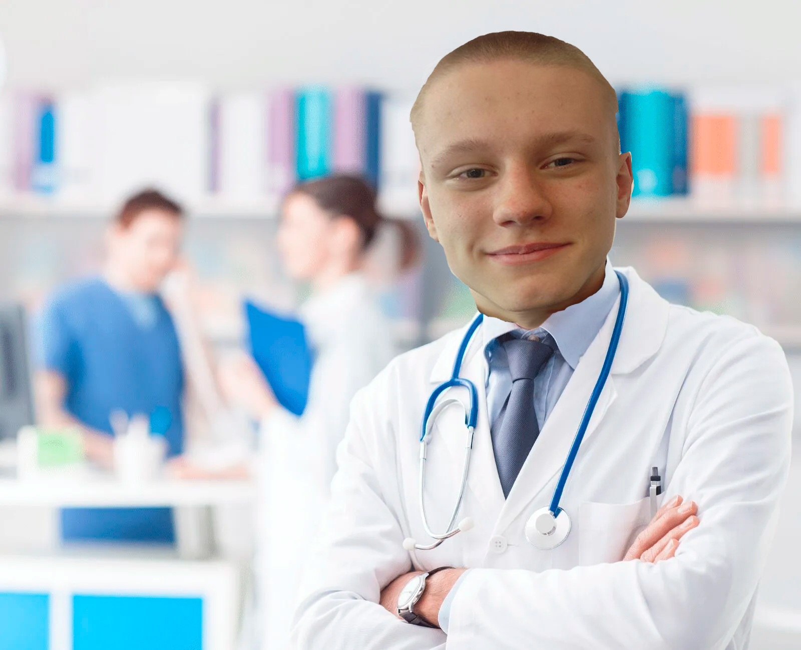
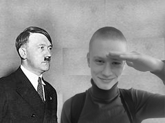
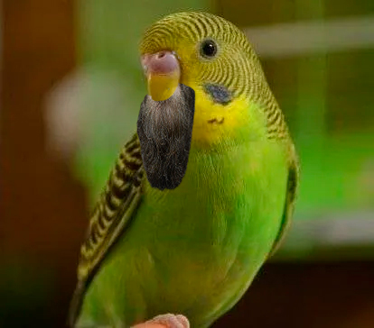
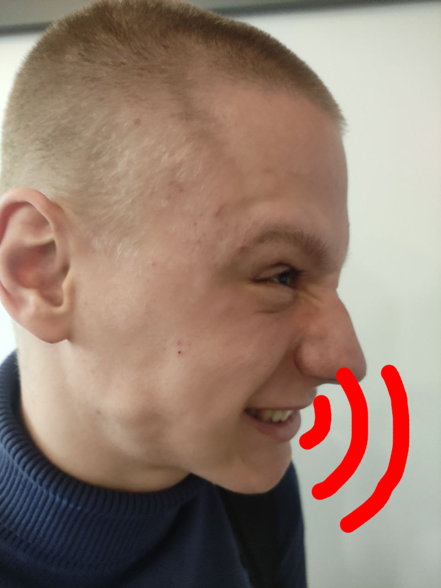
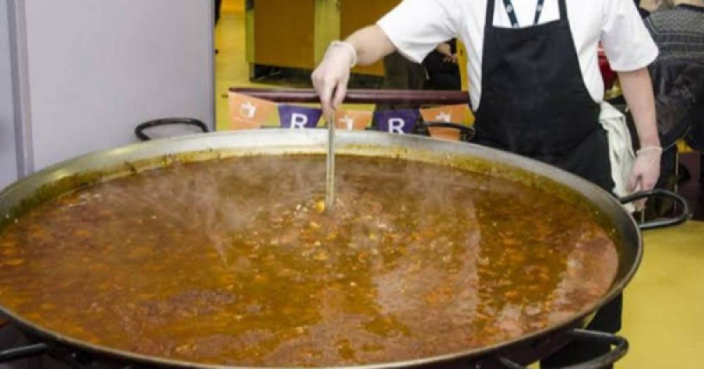
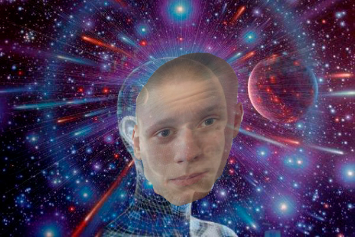
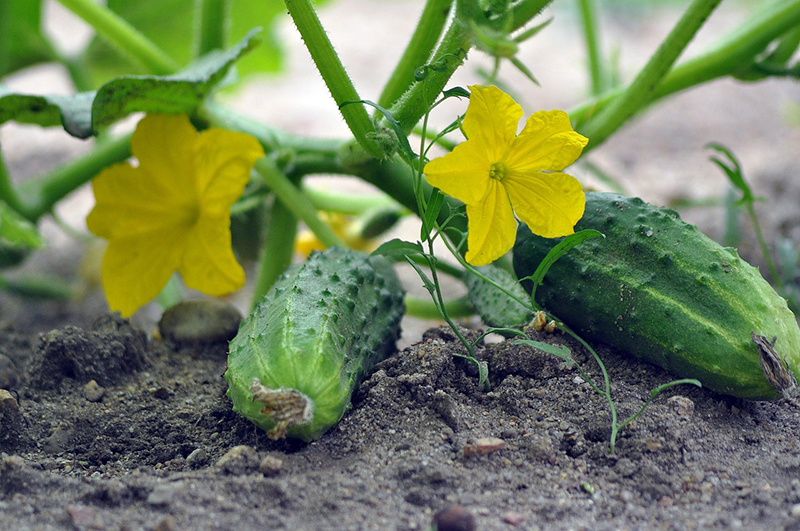
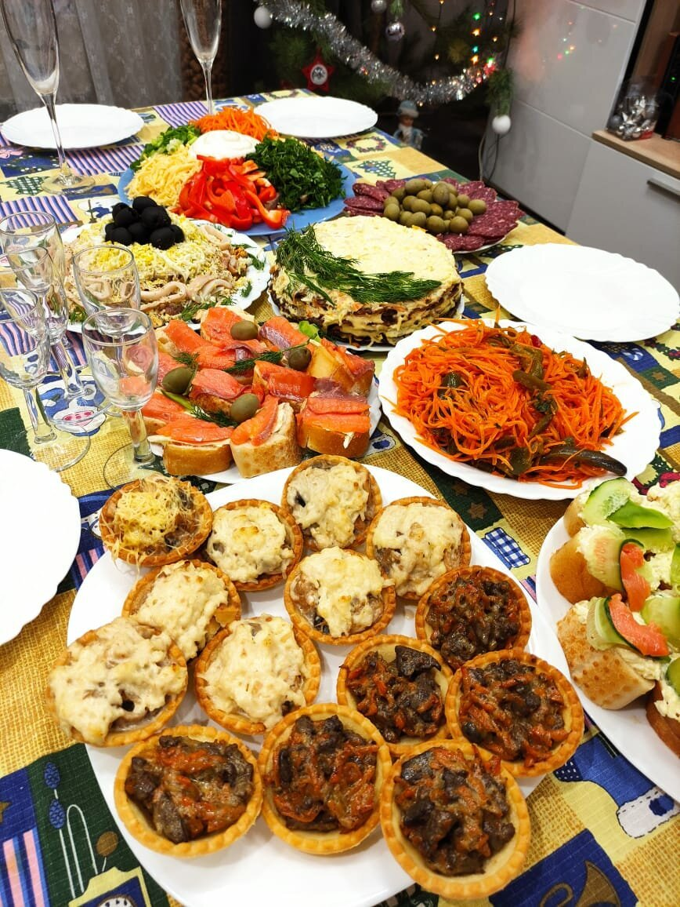

Загадки медицины: Как лысый Роман Денисович стал лучшим врачом России?

Лысый Роман Денисович
В мире редко встречаются такие необычные истории,
как история Романа Денисовича, известного врача,
который, несмотря на свои успехи, всегда помнит о своих корнях и необычных методах
обучения, которые он получил в детстве от своих мудрый учителей.
Одним из таких учителей был дед Романа — это человек, который мог бы стать
персонажем фильма ужасов.
Суровый и строгий, он не знал пощады, особенно когда дело касалось обучения
своего внука. В 40-е годы дед был частью секретного подразделения
армии нацистской Германии, где он освоил множество «особых»
методик лечения, которые, мягко говоря, выходят
за рамки традиционной медицины - ведь они в разы лучше и эффективнее.
Он часто использовал дилдо как основной
инструмент для лечения, уверяя, что это не просто предмет, а настоящая философия жизни.
В детстве Роман часто сталкивался с жестокостью деда. За каждую ошибку он получал не только
строгий выговор, но и иногда даже смачные оплеухи самим инструментом лечения.
«Если ты не научишься работать с дилдом, как ты сможешь справляться с настоящими больными?»
— гремел дед, когда Роман перепутал дилдо с берцами. Эти жесткие уроки сделали Романа
стойким и целеустремленным человеком, готовым на всё ради излечения больного,
но они оставили и немало шрамов на душе и психике.

Суровые обучения у деда
Но не только дед стал учителем Романа. В его жизни появился и другой наставник —
Мустафа-Алибаба-Чонгук, мусульманский монах с длинной бородой и ярким халатом,
который был знаком с одним из родственником Романа - Иисусом Кораном.
Мустафа принес в жизнь Романа совершенно другой подход к медицине,
основанный на исцелении с помощью магических приворотов, особых методик вскрытия и
невероятных способов лечения с помощью спермотерапии.

Мустафа-Алибаба-Чонгук
«Сперма — это Божье чудо, которое может исцелить любые болезни», — утверждал Мустафа,
обучая Романа методикам спермотерапии. Эта врачебная методика,
которая казалась абсурдным в сочетании с методами деда, открыл для Романа новые горизонты
и позволил ему взглянуть на медицину с другой стороны.
Методы Романа: Как работают и откуда взялись?
Расскажем о некоторых эффективных методиках Романа, одно из которых,
это энергоинформационная терапия.
Эта методика основана на принципах взаимодействия психики пациента и информации.
Пациент помещается в специальное пространство, где Роман начинает неистово громко издавать
всевозможные звуки разного содержания.
С помощью этого он направляет энергию в проблемные зоны, восстанавливая гармонию организма пациента.

Энергоинформационная терапия
Методика была разработана Романом на основе древних учений о чакрах и энергетических полях,
а также современных исследований в области квантовой физики и психологии.
Наставник Романа объединил эти знания, чтобы создать уникальную терапию.
Энергоинформационная терапия эффективна при лечении хронических заболеваний,
стресса, тревожности и депрессии. Пациенты отмечают улучшение общего самочувствия,
повышение уровня энергии и эмоциональную стабильность.
Следующая практика - терапия природными средствами
Эта методика работает на основе действия полезных свойств различных
биологических веществ с телом пациента.
Наставник Романа использует специальные ингридиенты, такие как сперма, моча и кал,
которые резонируют особым образом с организмом пациента.
Терапия природными средствами черпает вдохновение из древних шаманских практик и
современных исследований о влиянии биохимии на психоэмоциональное состояние.
Наставник Романа адаптировал эти знания для создания эффективной методики.

Терапия природными средствами
Эта терапия полезна для лечения расстройств сна, хронической усталости,
депрессии и тревожности. Пациенты отмечают улучшение настроения и общее укрепление здоровья
после сеансов.
Основная практика поиска диагноза - Визуализация болезней.
Исследование основано на использовании визуализации в голове Ромы
процессов в организме пациента. Это позволяет Роману предстваить тело пациента в голове,
тем самым видя все его болезни. Он также использует специальные изображения и символы,
которые помогают углубить процесс визуализации.

Визуализация болезней Романом
Визуализация исцеления была разработана на основе исследований
о психосоматике и влиянии мыслей на физическое состояние.
Наставник Романа изучал работы психологов и целителей, чтобы создать эту методику.
Визуализация исцеления эффективна при нахождении хронических заболеваний,
таких как астма, мигрень и даже некоторые формы рака. Пациенты сообщают о
100% точности этой методики.
"Стоит ли...": Какие методы профилактики можем предложить?
Доктор Лысый предлагает несколько методов профилактики, которые
помогают новым пациентам поддерживать здоровье и предотвращать развитие заболеваний.
Эти методы основаны на комплексном подходе, включающем физические, эмоциональные
и духовные аспекты. О некоторых из них мы расскажем вам ниже.
Роман рекомендует использование музыки, в особенности записанные
самим доктором аудио его великолепного пения как средства для профилактики
стресса и эмоционального выгорания. Пациенты могут восхищаться вдохновляющими композициями
и сладким убаюкивающим пением Романа, которые помогут им расслабиться
и восстановить внутреннее равновесие.
Терапия музыкой Романа
Музыкальная терапия способствует снижению тревожности,
улучшению настроения и повышению устойчивости к стрессовым ситуациям, а также укрпелению
психического здоровья и профилактики нервных срывов.
Также, в качестве важного аспекта закаливания, Роман рекомендует
синхронизироваться с природными ритмами
через физическую активность на свежем воздухе. Он рекомендует запитываться силой земли,
суя огурец в жопу, не отрывая от ботвы и сувать дилдо во все возможные отверстия,
что помогает укрепить тело и дух.
Регулярные физические упражнения на свежем воздухе способствуют улучшению
физического состояния, укреплению жопы и других отверстий в теле и повышению уровня
тестостерона в сперме.

Синхронизация с земельными ритмами
Также Роман акцентирует внимание на важности сбалансированного питания
и достаточного потребления мочи и спермы. Он рекомендует включать в рацион больше
свежего кала и стриженных ногтей, чтобы избежать недостатков минеральных веществ в организме,
и также он рекомендует потреблять спермосодержащие продукты и следить за уровнем спермотации.

Внедрение правильного рациона
Правильное питание и достаточное потребление спермы способствуют укреплению
иммунной системы, улучшению обмена веществ и общему самочувствию.
Мы покажем вам уникальные кадры того, как Роман использует свои методики лечения на настоящих больных, которые точно
рады быть на приёме у Романа.